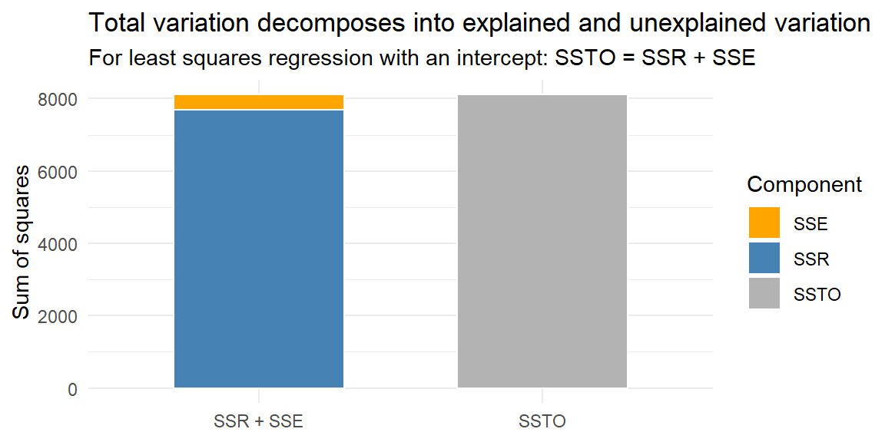

“Regression analysis is the hydrogen bomb of the statistics arsenal.” - Charles Wheelan
The steps we followed in developing a simple linear model are applicable to the multiple regression model.
Analyzing a Multiple Regression Model
Collect the sample data (i.e., the value of \(y\), \(x_1\), \(x_2\), …, \(x_k\)) for each unit in the sample.
Hypothesize the form of the model (i.e., the deterministic component), \(E(y)\). This involves choosing which independent variables to include in the model.
Use the method of least squares to estimate the unknown parameters.
Specify the probability distribution of the random error component \(\varepsilon\) and estimate its variance\(\sigma^2\).
Statistically evaluate the utility of the model.
Check that the assumptions on \(\varepsilon\) are satisfied and make model modifications, if necessary.
Finally, if the model is deemed adequate, use the fitted model to estimate the mean value of \(y\) or to predict a particular value of \(y\) for given values of the independent variables, and to make other inferences.
We will first assume the model is known and the assumptions hold. We will then come back to step 2 and step 6 later. Let’s first discuss what the assumptions are.
12.1 Model Assumptions
The assumptions for the multiple regression model are the same as the simple linear model. That is,
Linearity - We assume the model is linear in the parameters but not necessarily linear in the predictor variables. Thus, some of the predictor variables may need to be transformed.
constantvariance
normality
independence
The inferences on the multiple regression model will depend on these assumptions holding. We will discuss how to check these later.
NoteAssumptions and the F-test
The ANOVA \(F\)-test is a model-utility test, but it still relies on the regression assumptions.
Linearity affects whether the fitted model is describing the right mean structure.
Constant variance affects the reliability of the standard error estimate.
Normality is especially important for small-sample inference.
Independence affects whether the information in the data is being counted correctly.
A small p-value from the global \(F\)-test does not prove that the model assumptions are satisfied. It only says that, under the model assumptions, the predictors collectively explain more variation than we would expect by chance if all slope coefficients were 0.
12.2 A First-Order Model with Quantitative Predictors
Recall that a first-order model means that none of the predictor variables are functions of any other predictor variables.
When the independent variables are quantitative, the \(\beta\) parameters in the first-order model have similar interpretations as the simple regression model. The difference is that when we interpret the \(\beta\) that multiplies one of the variables (e.g., \(x_1\)), we must be certain to hold the values of the remaining independent variables (e.g., \(x_2\), \(x_3\)) fixed.
WarningPartial slopes are still conditional
The ANOVA \(F\)-test asks whether the predictors are collectively useful. It does not change how individual slopes are interpreted.
In a first-order model with quantitative predictors, each slope is interpreted as the expected change in the response for a one-unit increase in that predictor, holding the other predictors fixed.
12.3 Testing the Utility of a Model: The Analysis of Variance \(F\)-Test
The objective of step 5 in a multiple regression analysis is to conduct a test of the utility of the model—that is, a test to determine whether the model is adequate for predicting \(y\).
Later, we will examine how to conduct \(t\)-tests on each \(\beta\) parameter in a model, where \[
\begin{align*}
H_0: \beta_j = 0, \qquad j=1, 2, \ldots, p-1
\end{align*}
\]
However, this approach is generally not a good way to determine whether the overall model is contributing information for the prediction of \(y\). If we were to conduct a series of \(t\)-tests to determine whether the independent variables are contributing to the predictive relationship, we would be very likely to make one or more errors in deciding which terms to retain in the model and which to exclude.
Suppose you fit a first-order model with 10 quantitative independent variables, \(x_1, x_2,..., x_{10}\), and decide to conduct \(t\)-tests on all 10 individual \(\beta\)’s in the model, each at \(\alpha = .05\).
For any one test, the probability of making a type I error is 0.05: \[
\begin{align*}
P(\text{Reject } H_0|\beta_j=0) &= {0.05}\\
& {= 1 - 0.95}
\end{align*}
\] If we were to do ten of these tests (one for each predictor variable), then the probability that at least one is a type I error is \[
\begin{align*}
P(\text{Reject at least one } H_0|\beta_1=\beta_2=\cdots=\beta_{p-1}=0)
& = 1-[(1-\alpha)^{10}]\\
& {= 1-(0.95)^{10}}\\
&{ = 0.401}
\end{align*}
\]
Even if all the \(\beta\) parameters (except \(\beta_0\)) in the model are equal to 0, approximately 40% of the time you will incorrectly reject the null hypothesis at least once and conclude that some \(\beta\) parameter is nonzero. In other words, the overall Type I error is about .40, not .05.
To illustrate this inflated Type I error, let’s look at the following example.
Example 12.1
ExampleInflated Type I error from many individual tests
We will simulate a sample of size 200 with a response variable \(y\) and ten predictor variables \(x_1, x_2, \ldots, x_{10}\). The random error term \(\varepsilon\) will be a standard normal random variable.
The true model will have each coefficient \(\beta\) set to 0, with the exception of \(\beta_0\) which will be 20. We will conduct a \(t\)-test for each coefficient (except \(\beta_0\)). Since the true coefficient is 0, we expect to see p-values greater than 0.05 for each coefficient.
We will fit the model and test the coefficients 1000 times. We will count the number of times at least one of the coefficients was less than 0.05 (which would lead to a Type I error).
We see that 41.4% of the time, we had at least one coefficient have a p-value smaller than 0.05. This corresponds to the probability of at least one Type I error of around 0.401.
ExampleWorked example: Comparing many t-tests to the global F-test
The previous simulation counted how often at least one individual \(t\)-test was significant when all slope coefficients were truly 0. Now compare that behavior with the global \(F\)-test.
When all slope coefficients are truly 0, the global \(F\)-test keeps the Type I error rate close to \(\alpha = 0.05\). The “many separate \(t\)-tests” approach has a much larger chance of producing at least one false positive.
In multiple regression models for which a large number of independent variables are being considered, conducting a series of \(t\)-tests may cause the experimenter to include a large number of insignificant variables and exclude some useful ones. If we want to test the utility of a multiple regression model, we will need a globaltest (one that encompasses all the \(\beta\) parameters).
NoteWhat the global F-test asks
For a model with predictors \(x_1,\ldots,x_{p-1}\), the global \(F\)-test asks:
\[
H_0:\beta_1=\beta_2=\cdots=\beta_{p-1}=0
\]
against
\[
H_a:\text{at least one slope coefficient is not 0.}
\]
The test is global because it evaluates the model’s predictors as a group. If the test is significant, it does not tell us which predictor is responsible. It only tells us that the model with predictors improves on the intercept-only model.
12.3.1 Partitioning the Sum of Squares
Recall when we discussed the coefficient of determination that we used \(SS_{yy}\) to denote the variability of the response variable \(y\) from its mean \(\bar y\) (without regard to the model involving \(x\)).
Another name for \(SS_{yy}\) is the sum of squares total (SSTO). We call it this since it gives us a measure of total variability in \(y\).
In multiple regression, SSTO is still the same as \(SS_{yy}\). In matrix notation this can be expressed as \[
\begin{align}
SSTO & ={\bf Y}^{\prime}{\bf Y}-\left(\frac{1}{n}\right){\bf Y}^{\prime}{\bf J}{\bf Y}
\end{align}
\tag{12.1}\]
Sum of Squares Error (SSE)
Also recall the variability of \(y\) about the regression line (in simple linear regression) was expressed by SSE. We can think of this as the variability of \(y\) remaining after explaining some of the variability with the regression model.
In multiple regression, SSE is still the sum of the squared distances between the response \(y\) and the fitted model \(\hat{y}\). Now, the fitted model is the fitted hyperplane instead of a line.
The SSE can be expressed in matrix terms as \[
\begin{align}
SSE & =\left({\bf Y}-{\bf X}{\bf b}\right)^{\prime}\left({\bf Y}-{\bf X}{\bf b}\right)\\
& ={\bf Y}^{\prime}{\bf Y}-{\bf b}^{\prime}{\bf X}^{\prime}{\bf Y}
\end{align}
\tag{12.2}\]
Sum of Squares Regression (SSR)
If SSTO is the total variability of \(y\) (without regard to the predictor variables), and SSE is the variability of \(y\) left over after explaining the variability of \(y\) with the model (including the predictor variables), we might want to know the variability of \(y\) explained by the model.
We call the variability explained by the regression model the sum of squares regression (SSR).
We will show below that SSR can be expressed as \[
\begin{align}
SSR & =\sum\left(\hat{y}_{i}-\bar{y}\right)^{2}
\end{align}
\tag{12.3}\] which can be expressed in matrix terms as \[
\begin{align}
SSR & ={\bf b}^{\prime}{\bf X}^{\prime}{\bf Y}-\left(\frac{1}{n}\right){\bf Y}^{\prime}{\bf J}{\bf Y}
\end{align}
\tag{12.4}\]
Components of SSTO
To see how SSTO, SSR, and SSE relate to each other, consider how SSTO is a sum of squares of \(y\) from its mean \(\bar{y}\): \[
\begin{align*}
y_{i}-\bar{y}
\end{align*}
\]
We can add and subtract the fitted value \(\hat{y}_{i}\) to get \[
\begin{align*}
y_{i}-\bar{y} & =y_{i}-\hat{y}_{i}+\hat{y}_{i}-\bar{y}\\
& =\left(y_{i}-\hat{y}_{i}\right)+\left(\hat{y}_{i}-\bar{y}\right)
\end{align*}
\]
Squaring both sides gives us \[
\begin{align*}
\left(y_{i}-\bar{y}\right)^{2} & =\left[\left(y_{i}-\hat{y}_{i}\right)+\left(\hat{y}_{i}-\bar{y}\right)\right]^{2}\\
& =\left(y_{i}-\hat{y}_{i}\right)^{2}+\left(\hat{y}_{i}-\bar{y}\right)^{2}+2\left(y_{i}-\hat{y}_{i}\right)\left(\hat{y}_{i}-\bar{y}\right)
\end{align*}
\]
Summing both sides gives us \[
\begin{align*}
\sum\left(y_{i}-\bar{y}\right)^{2} & =\sum\left(y_{i}-\hat{y}_{i}\right)^{2}+\sum\left(\hat{y}_{i}-\bar{y}\right)^{2}+2\sum\left(y_{i}-\hat{y}_{i}\right)\left(\hat{y}_{i}-\bar{y}\right)\\
& =\sum\left(y_{i}-\hat{y}_{i}\right)^{2}+\sum\left(\hat{y}_{i}-\bar{y}\right)^{2}+2\sum\hat{y}_{i}e_{i}-2\bar{y}\sum e_{i}
\end{align*}
\]
Note that \(\sum\hat{y}_{i}e_{i}=0\) and \(\sum e_{i}=0\).
Therefore, we have \[
\begin{align*}
\sum\left(y_{i}-\bar{y}\right)^{2} & =\sum\left(\hat{y}_{i}-\bar{y}\right)^{2}+\sum\left(y_{i}-\hat{y}_{i}\right)^{2}\\
SSTO & =SSR+SSE
\end{align*}
\tag{12.5}\]
We call this the decomposition of SSTO.
ExampleWorked example: Decomposing SSTO for the `trees` model
For the trees model with Volume predicted by Girth and Height, the total variation in Volume can be split into variation explained by the model and variation left in the residuals.
trees_anova_fit<-lm(Volume~Girth+Height, data =trees)trees_y<-trees$Volumetrees_yhat<-fitted(trees_anova_fit)trees_resid<-resid(trees_anova_fit)ssto_trees<-sum((trees_y-mean(trees_y))^2)ssr_trees<-sum((trees_yhat-mean(trees_y))^2)sse_trees<-sum(trees_resid^2)ss_decomposition<-tibble( source =c("Total variation", "Explained by regression", "Unexplained error"), symbol =c("SSTO", "SSR", "SSE"), value =c(ssto_trees, ssr_trees, sse_trees))knitr::kable(ss_decomposition, digits =4)
source
symbol
value
Total variation
SSTO
8106.0839
Explained by regression
SSR
7684.1625
Unexplained error
SSE
421.9214
The decomposition says
\[
SSTO = SSR + SSE.
\]
For this model, 8106.0839 is approximately equal to 7684.1625 + 421.9214.
ExampleWorked example: Visualizing `SSTO = SSR + SSE`
The decomposition can also be shown visually. The total bar shows SSTO. The second bar breaks that same total into SSR and SSE.
ss_visual<-tibble( bar =c("SSTO", "SSR + SSE", "SSR + SSE"), component =c("SSTO", "SSR", "SSE"), value =c(ssto_trees, ssr_trees, sse_trees))ggplot(ss_visual, aes(x =bar, y =value, fill =component))+geom_col(width =0.6, color ="white")+scale_fill_manual( values =c("SSTO"="gray70","SSR"="steelblue","SSE"="orange"))+labs( x =NULL, y ="Sum of squares", fill ="Component", title ="Total variation decomposes into explained and unexplained variation", subtitle ="For least squares regression with an intercept: SSTO = SSR + SSE")+theme_minimal()

The visual point is simple: the total variation in the response can be split into the part explained by the fitted model and the part left in the residuals.
Degrees of Freedom
The degrees of freedom can be decomposed as well. Note that the degrees of freedom for SSTO is \[
\begin{align*}
df_{SSTO} & =n-1
\end{align*}
\] since the mean of \(y\) is needed to be estimated with \(\bar{y}\).
The degrees of freedom for SSE is \[
\begin{align*}
df_{SSE} & =n-p
\end{align*}
\] since the \(p\) coefficients \(\beta_{0},\ldots,\beta_{p-1}\) need to be estimated with \(\hat{\beta}_{0},\ldots,\hat{\beta}_{p-1}.\)
For SSR, the degrees of freedom is \[
\begin{align*}
df_{SSR} & =p-1
\end{align*}
\] since there are \(p\) estimated coefficients \(\hat{\beta}_{0},\ldots,\hat{\beta}_{p-1}\) but need to estimate the mean of \(y\) with \(\bar{y}\).
Decomposing the degrees of freedom give us \[
\begin{align}
n-1 & =p-1+n-p\\
df_{SSTO} & =df_{SSR}+df_{SSE}
\end{align}
\tag{12.6}\]
12.3.2 The Analysis of Variance (ANOVA) Table
The sums of squares and degrees of freedom are commonly displayed in an analysis of variance (ANOVA) table:
Source
df
SS
MS
F
p-value
Regression
\(df_{SSR}\)
\(SSR\)
Error
\(df_{SSE}\)
\(SSE\)
Total
\(df_{SSTO}\)
\(SSTO\)
Mean Squares
Recall that if we divide SSE by its degrees of freedom, we obtain the mean square error: \[
\begin{align}
MSE & =\frac{SSE}{n-p}
\end{align}
\tag{12.7}\]
Likewise, if we divide SSR by its degrees of freedom, we obtain the mean square regression: \[
\begin{align}
MSR & =\frac{SSR}{p-1}
\end{align}
\tag{12.8}\]
These values are also included in the ANOVA table:
Source
df
SS
MS
F
p-value
Regression
\(df_{SSR}\)
\(SSR\)
\(MSR\)
Error
\(df_{SSE}\)
\(SSE\)
\(MSE\)
Total
\(df_{SSTO}\)
\(SSTO\)
Note that although the sum of squares and degrees of freedom decompose, the mean squares do not. That is \[
\begin{align*}
\frac{SSTO}{n-1} & \ne MSR+MSE
\end{align*}
\]
In fact, the mean square for the total (\(SSTO/n-1\)) does not usually show up on the ANOVA table.
12.3.3 The ANOVA F-test
We tested the slope in simple regression to see if there is a significant linear relationship between \(X\) and \(Y\).
In multiple regression, we will want to see if there is any significant linear relationship between any of the \(x\)s and \(y\). Thus, we want to test the hypotheses \[
\begin{align*}
H_{0}: & \beta_{1}=\beta_{2}=\cdots=\beta_{p-1}=0\\
H_{a}: & \text{at least one } \beta \text{ is not equal to zero}
\end{align*}
\]
To construct a test statistic, we first note that \[
\begin{align*}
\frac{SSE}{\sigma^{2}} & \sim\chi^{2}\left(n-p\right)
\end{align*}
\] Also, if \(H_{0}\) is true, then \[
\begin{align*}
\frac{SSR}{\sigma^{2}} & \sim\chi^{2}\left(p-1\right)
\end{align*}
\]
The ratio of two independent chi-square random variables divided by their degrees of freedom gives a statistic that follows an F-distribution.
Since \(SSE/\sigma^{2}\) and \(SSR/\sigma^{2}\) are independent (proof not given here), then under \(H_{0}\), we can construct a test statistic as \[
\begin{align}
F^{*} & =\left(\frac{\frac{SSR}{\sigma^{2}}}{p-1}\right)\div\left(\frac{\frac{SSE}{\sigma^{2}}}{n-p}\right)\\
& =\left(\frac{SSR}{p-1}\right)\div\left(\frac{SSE}{n-p}\right)\\
& =\frac{MSR}{MSE}
\end{align}
\tag{12.9}\]
Large values of \(F^{*}\) indicate evidence for \(H_{a}\).
The test statistic and p-value are the last two components of the ANOVA table:
Source
df
SS
MS
F
p-value
Regression
\(df_{SSR}\)
\(SSR\)
\(MSR\)
\(F^{*}\)
\(P\left(F\ge F^{*}\right)\)
Error
\(df_{SSE}\)
\(SSE\)
\(MSE\)
Total
\(df_{SSTO}\)
\(SSTO\)
ExampleWorked example: Building the ANOVA table by hand
Using the sums of squares from the trees model, we can construct the ANOVA table directly.
The global \(F\) statistic compares explained variation per regression degree of freedom to unexplained variation per error degree of freedom.
\[
F^*=\frac{MSR}{MSE}.
\]
Large values of \(F^*\) occur when the regression model explains a lot of variation relative to the residual noise.
WarningWhat a significant F-test does not tell you
A significant global \(F\)-test tells us that at least one slope coefficient is not 0. It does not tell us:
which predictor or predictors are useful,
whether the model assumptions are satisfied,
whether the relationship is causal,
whether the model predicts well on new data.
Those questions require follow-up coefficient tests, diagnostic plots, subject-area reasoning, and validation.
Example 12.2
ExampleThe global F-test for the `trees` model
We will fit a multiple regression model to the trees dataset. The Tidymodels framework will be used.
library(tidyverse)library(tidymodels)data(trees)# Prepare datadat_recipe<-recipe(Volume~Girth+Height, data =trees)# Set up modellm_model<-linear_reg()|>set_engine("lm")# Set up the workflowlm_workflow<-workflow()|>add_recipe(dat_recipe)|>add_model(lm_model)# Fit the modellm_fit<-lm_workflow|>fit(data =trees)# Get the coefficientstrees_tidymodels_coefficients<-lm_fit|>tidy()knitr::kable(trees_tidymodels_coefficients, digits =4)
term
estimate
std.error
statistic
p.value
(Intercept)
-57.9877
8.6382
-6.7129
0.0000
Girth
4.7082
0.2643
17.8161
0.0000
Height
0.3393
0.1302
2.6066
0.0145
The fitted model is \[
\hat{y} = -57.988 + 4.708x_1 + 0.339x_2
\]
where \(x_1\) is Girth and \(x_2\) is Height.
For every one-inch increase in Girth, the average Volume increases by 4.708 cubic feet, keeping Height fixed.
For every one-foot increase in Height, the average Volume increases by 0.339 cubic feet, keeping Girth fixed.
# Get the global F-test p-valuetrees_global_test<-lm_fit|>glance()trees_global_test|>select(r.squared, statistic, p.value, df, df.residual)|>knitr::kable(digits =4)
r.squared
statistic
p.value
df
df.residual
0.948
254.9723
0
2
28
# Get the ANOVA table# Note that SSR is split into individual predictorstrees_sequential_anova<-lm_fit|>extract_fit_engine()|>anova()knitr::kable(trees_sequential_anova, digits =4)
Df
Sum Sq
Mean Sq
F value
Pr(>F)
Girth
1
7581.7813
7581.7813
503.1503
0.0000
Height
1
102.3812
102.3812
6.7943
0.0145
Residuals
28
421.9214
15.0686
NA
NA
Since the global F-test p-value is very small, there is sufficient evidence to conclude that at least one slope coefficient is not 0.
The anova() table shown by R splits the regression sum of squares across predictors in the order they enter the model. The global F-test reported by glance() tests the predictors collectively.
NoteGlobal F-test versus sequential ANOVA table
The global \(F\)-test and the anova() table from anova(lm_object) answer related but different questions.
Output
Main question
Important detail
glance() global F-test
Does the full model improve on the intercept-only model?
Tests all slopes together.
anova(lm_object) sequential ANOVA table
How much sum of squares is added by each predictor as it enters the model?
The total model fit is the same either way, but the sequential ANOVA table allocates explained variation according to the order in which predictors enter the formula. This is why the global F-test is the cleaner answer to the question, “Is the predictor set useful as a group?”
12.3.4 A Bridge to Adjusted \(R^2\)
The ANOVA decomposition also connects directly to \(R^2\).
Recall that
\[
R^2=\frac{SSR}{SSTO}=1-\frac{SSE}{SSTO}.
\]
This measures the proportion of sample variation in the response explained by the fitted model. However, ordinary \(R^2\) never decreases when predictors are added, even if the new predictors are not useful. Adjusted \(R^2\) adds a degrees-of-freedom penalty:
\[
R^2_{adj}=1-\frac{SSE/(n-p)}{SSTO/(n-1)}.
\]
Notice that this formula uses the same ingredients as the ANOVA table: \(SSE\), \(SSTO\), \(n-p\), and \(n-1\).
ExampleWorked example: Connecting ANOVA to adjusted `R^2`
For the trees model, we can calculate \(R^2\) and adjusted \(R^2\) directly from the sums of squares.
r_squared_trees<-ssr_trees/ssto_treesadjusted_r_squared_trees<-1-(sse_trees/df_error)/(ssto_trees/df_total)rsq_compare<-tibble( quantity =c("R-squared from sums of squares", "Adjusted R-squared from ANOVA pieces", "R-squared from lm summary", "Adjusted R-squared from lm summary"), value =c(r_squared_trees,adjusted_r_squared_trees,summary(trees_anova_fit)$r.squared,summary(trees_anova_fit)$adj.r.squared))knitr::kable(rsq_compare, digits =4)
quantity
value
R-squared from sums of squares
0.9480
Adjusted R-squared from ANOVA pieces
0.9442
R-squared from lm summary
0.9480
Adjusted R-squared from lm summary
0.9442
Adjusted \(R^2\) is useful because it rewards explained variation but penalizes the model for using more predictors. It is not a hypothesis test, but it is closely connected to the same variation-decomposition ideas behind ANOVA.
12.4 Recap
This chapter introduced the ANOVA approach to testing the overall utility of a multiple regression model.
Idea
Meaning
Global F-test
Tests whether the predictors are collectively useful for explaining variation in the response.
Null hypothesis
\(H_0:\beta_1=\beta_2=\cdots=\beta_{p-1}=0\).
Alternative hypothesis
At least one slope coefficient is not 0.
SSTO
Total variation in the response: variation around \(\bar y\).
SSR
Regression variation: variation explained by the fitted model.
SSE
Error variation: variation left in the residuals.
Sum-of-squares decomposition
\(SSTO=SSR+SSE\).
Degrees-of-freedom decomposition
\(n-1=(p-1)+(n-p)\).
MSR
\(MSR=SSR/(p-1)\), explained variation per regression degree of freedom.
MSE
\(MSE=SSE/(n-p)\), unexplained variation per error degree of freedom.
F statistic
\(F^*=MSR/MSE\).
Large F statistic
Evidence against \(H_0\) and in favor of at least one useful predictor.
Sequential ANOVA
Splits SSR across predictors in formula order; useful, but order-dependent.
\(R^2\)
\(R^2=SSR/SSTO=1-SSE/SSTO\), the proportion of sample response variation explained by the model.
Adjusted \(R^2\)
\(R^2_{adj}=1-\dfrac{SSE/(n-p)}{SSTO/(n-1)}\), an \(R^2\)-like measure with a degrees-of-freedom penalty.
Important limitation
A significant global F-test does not identify which predictor is useful or prove that assumptions hold.
12.5 Check your understanding
NoteProblems
What is the purpose of the global ANOVA \(F\)-test in multiple regression?
What null hypothesis is tested by the global \(F\)-test?
Why is conducting many individual \(t\)-tests not the same as conducting one global model test?
What does SSTO measure?
What does SSR measure?
What does SSE measure?
How are SSTO, SSR, and SSE related?
What are the degrees of freedom for regression, error, and total in a model with \(p\) parameters and \(n\) observations?
Why do we divide sums of squares by degrees of freedom to form mean squares?
What does the statistic \(F^*=MSR/MSE\) compare?
What does a large value of \(F^*\) suggest?
If the global \(F\)-test is significant, does that tell us which predictor is useful? Explain.
Does a significant global \(F\)-test prove that the regression assumptions are satisfied?
Why is the global \(F\)-test best viewed as a test of collective usefulness?
Why can the sequential ANOVA table from anova(lm_object) change when the order of predictors changes?
How is \(R^2\) related to the ANOVA sums of squares?
Why does adjusted \(R^2\) include a degrees-of-freedom penalty?
TipSolutions
To test overall model utility. The global \(F\)-test asks whether the predictors, as a group, explain a meaningful amount of variation in the response.
All slopes are 0. The null hypothesis is \(H_0:\beta_1=\beta_2=\cdots=\beta_{p-1}=0\).
Multiple tests inflate error risk. Many individual \(t\)-tests create many chances for a Type I error. The global \(F\)-test evaluates the predictors together in one test.
Total response variation. SSTO measures the total variation of the observed responses around their mean.
Explained variation. SSR measures the part of the response variation explained by the fitted regression model.
Unexplained variation. SSE measures the residual variation left after fitting the model.
They decompose total variation. In least squares regression with an intercept, \(SSTO=SSR+SSE\).
Regression, error, total. The regression degrees of freedom are \(p-1\), the error degrees of freedom are \(n-p\), and the total degrees of freedom are \(n-1\).
To put variation on a per-degree-of-freedom scale. Mean squares compare sums of squares after accounting for their degrees of freedom.
Explained variation relative to residual variation. The \(F\) statistic compares MSR to MSE.
Evidence against the null. A large \(F^*\) suggests that the model explains more variation than expected if all slope coefficients were 0.
No. A significant global \(F\)-test says at least one slope is not 0, but it does not identify which one.
No. The test assumes the regression assumptions are reasonable; it does not verify them.
It evaluates the predictor set. The test compares a model with all predictors to an intercept-only model, so it addresses whether the predictors are collectively useful.
Sequential means order-dependent. The table gives each predictor credit for the extra sum of squares it explains after earlier predictors have already entered the model. If the order changes, that allocation can change.
It is explained variation divided by total variation.\(R^2=SSR/SSTO=1-SSE/SSTO\).
To discourage adding useless predictors. Ordinary \(R^2\) cannot decrease when predictors are added. Adjusted \(R^2\) compares MSE to the total mean square, so it accounts for both unexplained variation and the number of parameters estimated.